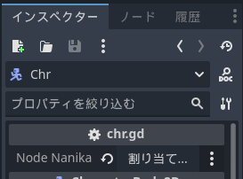
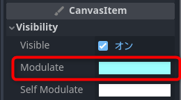
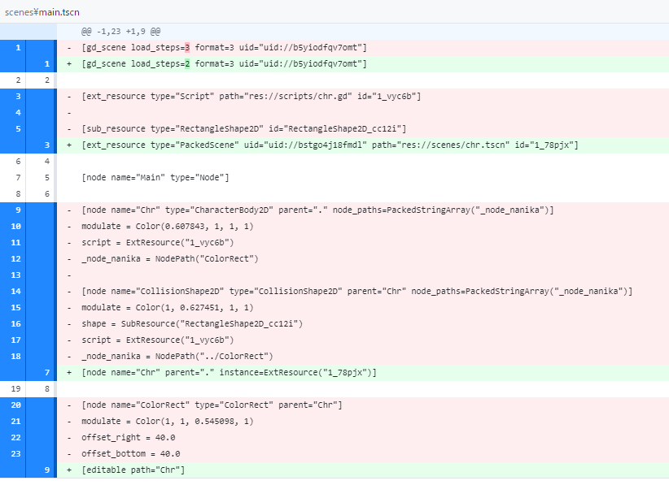
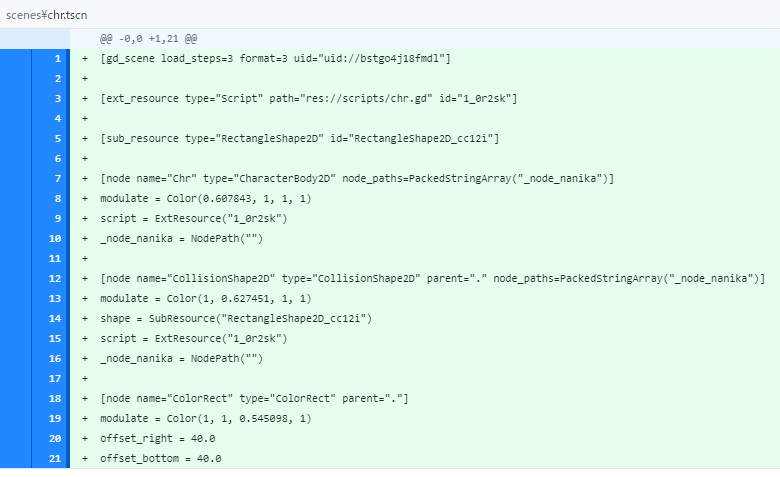
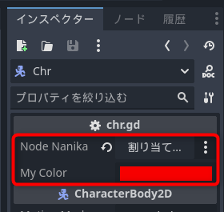
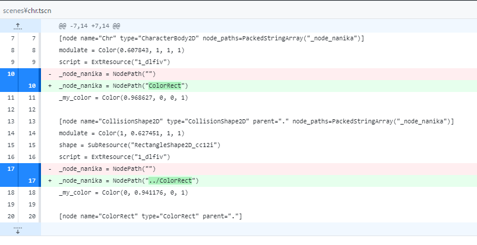
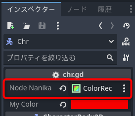
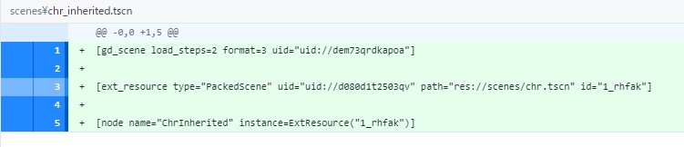

Brackeys Game Jam 2024.1に投稿した「次元ドア」の開発中にシーン絡みでいくつかの問題に悩まされました。
こららについて調べてみました。TileMapは別に改めてまとめます。
簡単なシーンを作成して、以下のことを調べてみました。
Godot 4.2.1の互換性レンダラーで以下のようなプロジェクトを作成しました。
以下、簡単な作成手順です。
extends Node
@export var _node_nanika: Node
func _ready():
print_debug("%s: %s" % [_node_nanika.get_parent().name, _node_nanika.modulate.color])
これらの変更はすべてmain.tscnに保存されます。
この状態で、Chrをシーンとして保存してみます。
これでmainシーンのChrはChrシーンのインスタンスになりました。先に設定していたNode NanikaとModulateがどうなったかを確認してみます。
ChrのNode Nanikaは設定が消えていて、戻すアイコンが表示されている状態です。

それに対してModulateは先ほどの設定が保存されていて、戻すアイコンがありません。

この動作の不一致は混乱の元になりそうです。さらにChrを編集可能な子にして中身を確認します。
chr.gdのNode Nankaはやはり消えていて、Modulateは保存されています。
Gitでmainシーンの差分を見ると以下の通りです。

消えた行のうち、12行目と18行目がChrとCollisionShape2Dに設定したNode Nanikaの設定です。ここでColorRectをアタッチした情報があります。この時点で、mainシーンからはNode Nanikaへの設定が消えています。
これがchrシーンに移動しているかを確認します。

10行目と16行目に_node_nanikaへの代入がありますが、接続が消えてしまっています。これが設定が消えた原因です。一方で、moduleteの値はmainから消えたものがchrに追加されています。
先の確認で、インスタンスを割り当てたNode Nanikaはシーンに変換した際に引き継がれないことが分かりました。そして新たな疑問が浮かびます。
このあたりを確認します。まずは最初の方です。ScriptにColor要素を追加して、同様のテストをしてみます。
extends Node
@export var _node_nanika: Node
@export var _my_color: Color
func _ready():
print_debug("%s: %s" % [_node_nanika.get_parent().name, _node_nanika.modulate.color])
ChrとCollisionShape2DそれぞれのMy Colorを変更して保存したら、Chrをシーンにします。
確認すると色は引き継がれることが分かりました。

シリアライズ化できるものは保存されて、インスタンスの参照のような設定は引き継がれないようです。
次は、子シーンにノードパスを設定した場合に親に引き継がれるかを確認してみます。
保存すると、Chrシーンに設定が

mainシーンに戻ると今度はノードパスが引き継がれていることが確認できます。

ここで戻るアイコンが表示されていることが引っかかりました。試しに押してみてもColorRectが設定されたままです。mainシーンを保存してGitで確認しましたが、mainシーンは何も保存されていませんでした。
この挙動はバグのような感じがします。もとのmainシーンにはNode Nankaの設定はありません。子シーンを読み込んだだけなのでここに変化はないはずなのですが、恐らくChrをシーンにする前の何らかの設定がエディター内に残っていて、それが不一致だったので戻るアイコンが表示されたのではないかと推察します。この挙動は分かりにくいので報告した方がいいかも知れませんね。
Chrの継承クラスChrInheritedを作成して、パラメーターの引き継がれ状況を観察します。
Gitで差分を見ると、継承シーンは非常にシンプルな構造であることが分かります。

細かい設定がないことから問題なく移行できていることが推測できます。確認すると、実際に問題なく参照できています。
ただここでも戻るアイコンが表示されることが引っかかります。押してみると、mainシーンのときと同様、ファイルを保存しても何も変更されませんでした。
継承シーンをmainシーンに配置したところ、NodePathの参照は正しく引き継がれていました。ただし、戻すアイコンは表示されます。押しても何も変更はありませんが、気持ちが良いものではありません。
以上から、開発中に悩まされたことの原因が掴めたような気がします。
問題の元凶はブランチをシーンとして保存するときにNodePathが引き継がれないことでした。これにより、親のシーンで編集している分には問題がなかった設定が、保存したシーンに引き継がれておらず、
さらに混乱を招いたのが、戻すアイコンが表示されることでした。値が変わっていないのにこのアイコンが表示されてしまうことで、何か操作を間違えたのかとぎょっとすることが多発しました。
去年の10月にすでにIssuesに報告されてた。
https://github.com/godotengine/godot/issues/84016
10/30に以下へ移行
https://github.com/godotengine/godot/issues/84146
SceneTreeでノードやPackedSceneをシーンを複製やコピペするさいに、ノードパスをただコピーをするだけで（あてはめ）しない。
https://github.com/godotengine/godot/issues/78060
この段階で観察すると、ChrにアタッチしたスクリプトのColorRectとCollisionShape2DのShapeに戻すアイコンが表示されます。保存しても消えません。これはデフォルトの状態ではない、ということになります。これらが保存されているのはmainシーンです。
Chrを選択して、ブランチをシーンとして保存します。mainシーンから
chrの座標を変更して保存してみます。
GitHubで確認すると、main.tscnに保存されていることが分かりました。
chrシーンを開くと座標はもとのままなので、mainシーンで編集した場合はmainシーンに保存されることが確認できました。また、変更した項目には戻すボタンが追加されます。
Godotはシーンの情報をすべてテキストで保存するので、Gitを使えば保存データがどのファイルに記録されたかを簡単に確認することができます。
かなり繰り返し悩まされた現象です。ステージ作成をしているうちに、仲間や敵が変な場所で反転する症状が出ました。
ここまでの検証から、子に行った変更は親には影響を与えないはずです。しかし、何らかの
やったこととしては、キャラの複製と継承して別のキャラを作ったことが挙げられる。
親のシーンでアタッチしたのではないかと推定。